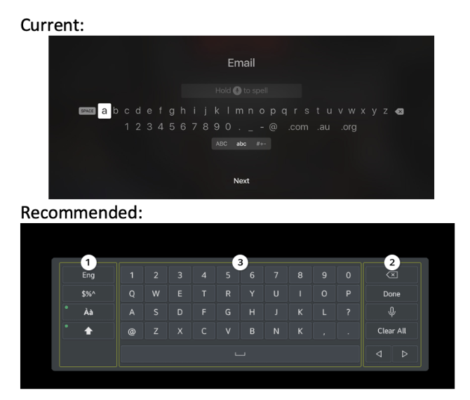
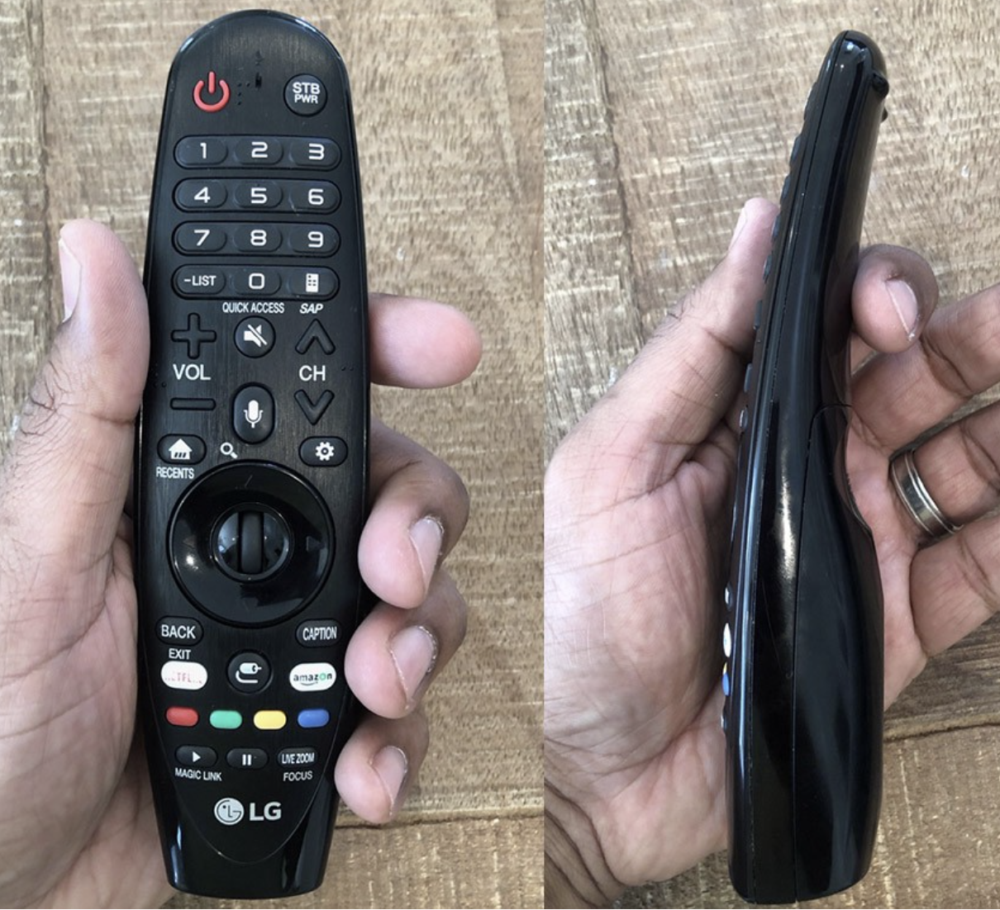

Recommendations
These recommendations are for changes which we feel should be
considered for the next generation of Apple TV remote. These
recommendations are based on our findings collected in exploratory
usability of the Apple remote with 9 random participants ranging from
ages 19-49. We feel these recommendations would greatly enhance the
usability of the Apple TV remote and have categorised them from
critical (most recommended to resolve) to low (recommended but not a
hindrance to the user).
Critical
-
Improve typing ability on the Apple TV remote:
Typing via the Apple TV remote is a long-drawn-out process which is a
visible pain point for participants which should be resolved right
away as it impedes users from completing tasks. The team feels that
changing the keyboard UI would be the best solution. The current UI
has letters and numbers in descending order and has no wrap-around
ability meaning users need to move back and forth along the line. By
switching to a standard keyboard which most people are used to, it
potentially could take users less time in finding characters and
typing.

https://www.macstories.net/news/apple-releases-tvos-9-2-bluetooth-keyboard-support-siri-dictation-app-folders-more/
https://www.samsung.com/in/support/tv-audio-video/what-are-additional-functions-available-while-using-qwerty-keypad-in-samsung-h-series-tv/
High
-
Update UI icons used on remote to indicate functions:
The Apple TV remote features several UI icons to indicate what is the
function of these buttons to users. These UI icons were not always
easily understood by users and left many confused as to what the
button did, leaving them to not use the button feature all together
during their exploring time. The most common of these was the home
button which upon initial interaction participants weren’t sure what
it was supposed to mean at all. Another UI icons which left confusion
and resulted in participants to not use it were the volume minus and
plus UI icons. A few participants commented that they thought the
volume controls were to change the channels and not to control volume.
The team feels more meaningful UI icons will help to bring clarity to
users and increase user experience especially on the main menu button
which could be something like a home or classic hamburger UI icon,
which are commonly more associated with the main menu. The team also
recommends using volume icons that better reflect the classic volume
controls which are found on Apple products.
https://icon-icons.com/icon/home-circle/137496
https://www.svgrepo.com/svg/126206/menu
https://stock.adobe.com/bg/search?k=volume%20icon
-
Ergonomic remote design: Many users made remarks on the remote
being uncomfortable due to the overall size and structure of the
remote. The team recommends that the overall shape of the remote be
made to be more ergonomic and fitting to the human hand. By adjusting
the remote to an ergonomic design button placement can also be easily
adjusted too, with frequently used buttons being placed closer to the
right side of the remote. This is recommended as most people use their
thumbs to navigate, and as most of the population is right-handed,
putting these buttons towards the right would accommodate more users
with the aim to improve and speed up user experience. The below image
is an example of an ergonomic remote shape which we recommend.

https://ubiquityvc.medium.com/the-apple-tv-remote-sucks-a-product-tear-down-lessons-learned-642cee84682d
Medium
-
Button placement on voice control: It is recommended that the
voice control feature button placement should be placed on the front
of the remote instead of on the side to help users see the feature.
Most users were unaware of the voice control feature as the buttons
are hidden on the side which lead to the feature not being utilised.
As a result of being hidden when users accidently hit the button, they
become aggravated and frustrated which could lead them to not wanting
to use the feature later. By placing the feature button on the front
of the remote users will be able to see it more clearly resulting in
them using it more often and not being frustrated through accidental
touching of it.
Low
-
Re-examine need for swipe feature:The Apple TV remote provides
both tactical touch and swipe ability via the circular dial buttons.
It was found that many users did not recognize these buttons' ability
to use swipe and instead would use the tactical touch ability more
often. It is recommended that the swipe ability either be more
apparent to the user by making the section look more like a swipe
surface. Another recommendation the team has would be to remove the
swipe ability as it was not commonly used, and it appears users favour
tactile touch leading to questioning if the feature is needed. Overall
the feature does not hinder the user though as all users were able to
use the feature but some choose to purposely not use it.
References
Full article:
https://www.medicaldesignbriefs.com/component/content/article/mdb/pub/features/articles/29108)
Full article: https://www.nngroup.com/articles/icon-testing/
De Kovel, C., Carrión-Castillo, A., & Francks, C. (2019). A large-scale
population study of early life factors influencing left-handedness.
Scientific reports, 9(1), 584.
https://doi.org/10.1038/s41598-018-37423-8
Gupta, S.P., Keates, S., & Clarkson, P.J. (2003). USABILITY
CONSIDERATIONS IN THE DESIGN OF HANDHELD ELECTRONIC DEVICES.